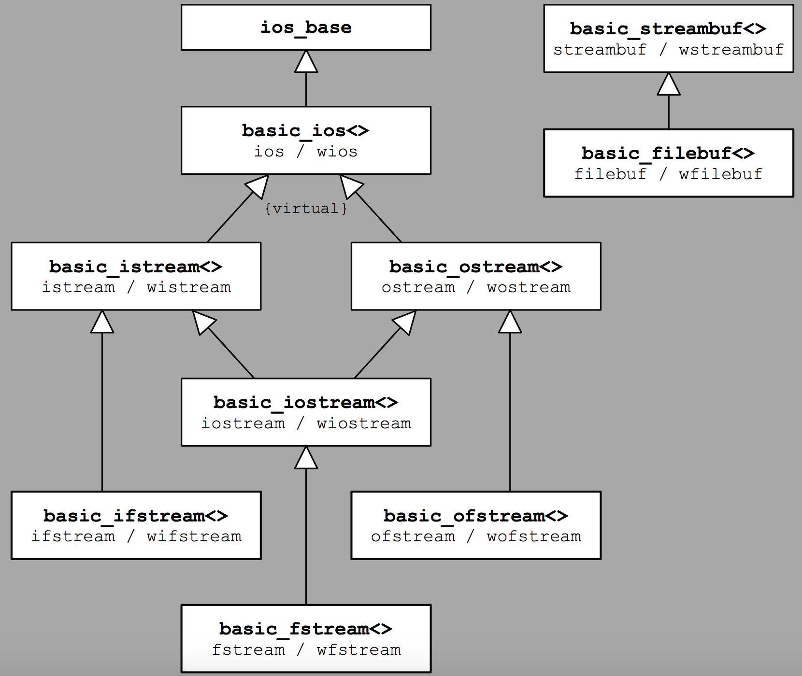

Strong specialization: formatting is delegated to basic_ios, I/O buffers to basic_streambuf:
Allows simple abstraction of a stream for files, strings, sockets, e.t.c.
| constant | meaning | function | meaning |
|---|---|---|---|
| goodbit | none of the other bits is set | good() | true if the stream is OK (goodbit is “set”) |
| eofbit | end-of-file was encountered | eof() | end-of-file was hit (eofbit is set) |
| failbit | an I/O operation was not successful | fail() | error occurred (failbit or badbit(!) is set) |
| badbit | fatal error; undefined state | bad() | fatal error (badbit is set) |
| rdstate() | flags currently set | ||
| clear() | clears all flags | ||
| clear(state) | clears all and sets state flags | ||
| setstate(state) | set additional state flags |
Note:
E.g., failbit set on formatting error (“qwe”>>int), but failbit is also always set when eofbit is set!
| function | reads until | # of chars | terminator | returns |
|---|---|---|---|---|
| get(s,num) | excluding newline or end-of-file | up to num-1 | appends | istream |
| get(s,num,t) | excluding t or end-of-file | up to num-1 | appends | istream |
| getline(s,num) | including newline or end-of-file | up to num-1 | appends | istream |
| getline(s,num,t) | including t or end-of-file | up to num-1 | appends | istream |
| read(s,num) | end-of-file | num | no | istream |
| readsome(s,num,t) | end-of-file | up to num | no | count |
get — terminator (’\n’ or delim) not read; sequence is terminated by a null character
getline = get, but it consumes terminator; it does not store it in s; failbit is set if no terminator found within count-1 characters
read — end-of-file during reading is an error, failbit is set in addition to eofbit
readsome — end-of-file is not an error
#include <iostream>
#include <fstream>
#include <string>
int main() {
// write string to a temporarily created file stream (since C++11)
std::string s("hello");
std::ofstream("fstream2.tmp") << s << std::endl;
// write C-string to a temporarily created file stream
// - NOTE: wrote a pointer value before C++11
std::ofstream("fstream2.tmp", std::ios::app) << "world" << std::endl;
}
#include <iostream>
#include <sstream>
#include <string>
#include <tuple>
tuple<string,string,string> parseName(string name) {
string s1, s2, s3;
istringstream(name) >> s1 >> s2 >> s3;
if( s3.empty() ) return tuple<string,string,string>(move(s1),"",move(s2));
return tuple<string,string,string>(move(s1),move(s2),move(s3));
}
Setting underlying buffers with ios::rdbuf you can “silence” stream or [re]direct it to a file
But lifetime of the buffer becomes your responsibility as stream tries to destruct it when it dies:
void qwe(){
// save output buffer of the stream
// use unique pointer with deleter that ensures to restore
// the original output buffer at the end of the function
// or if an exception is thrown below at any point
auto del = [&](streambuf* p) { cout.rdbuf(p); };
unique_ptr<streambuf,decltype(del)> origBuffer(cout.rdbuf(), del);
// redirect ouput into the file redirect.txt
ofstream file("redirect.txt");
cout.rdbuf(file.rdbuf());
// now use this magic
file << "one row for the file" << endl;
cout << "one row for the stream that also goes to the file " << endl;
} // closes file AND its buffer automatically, but cout is kept functional
Date format, currency, special symbols, alphabet ordering, … all is managed with locale facets
Locate format (X/Open) from LANG environment var: language[_area[.code]][@modifier]
Example: “C” (English, 7 bit), “en_US”, “de_AT.utf8”, “fr_CH”, “zh_CN”, “POSIX” (alias for “C”?)
std::locale langLocale(""); // empty string argument: determine locale by the environment variable LANG
std::cout.imbue(std::locale("C")); // identical to std::cout.imbue(std::locale::classic());
std::locale::global(std::locale("")); // sets default locale for all streams (yet to be created) to be based on LANG environment
All of the specific properties of locale are handled with corresponding facets
Every facet impements its own interface, so accessing facet stored in locate relies on its type:
locale en_US("en_US");
cout.imbue(en_US); // ensure that the money_put<> facet impacts the output
cout << showbase; // ... and currency is written
const money_put<char>& mpG = use_facet< money_put<char> >(en_US); // call has_facet to check if it is there; another example is time_put facet
mpG.put (cout, false, cout, ' ', 12345.678); // prints: "$123.46"; the same could be achieved with put_money manipulator hiding facet inside
// convert string to wstring
std::wstring to_wstring(const std::string& str, const std::locale& loc = std::locale())
{
std::vector<wchar_t> buf(str.size());
std::use_facet<std::ctype<wchar_t>>(loc).widen(str.data(), str.data()+str.size(), buf.data());
return std::wstring(buf.data(), buf.size());
}
// convert wstring to string with '?' as default character
std::string to_string(const std::wstring& str, const std::locale& loc = std::locale())
{
std::vector<char> buf(str.size());
std::use_facet<std::ctype<wchar_t>>(loc).narrow(str.data(), str.data()+str.size(), '?', buf.data());
return std::string(buf.data(), buf.size());
}
std::wcout << to_wstring("QWE EWQ") << std::endl;
std::wcout << to_string(to_wstring("QWE EWQ")) << std::endl;
Same construct can be used for changing the case with toupper and tolower members, but there are global convenience functions for that: std::islower(c,loc); std::toupper(c,loc); …
Things I did not cover: